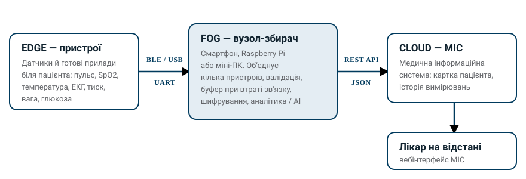

Про конкурс
Завдання команд — створити телемедичний комплект, близький за призначенням до готових систем на кшталт IDIS2GO, але побудований із доступних на ринку компонентів і підручних засобів. Це не копіювання готового виробу, а пошук інженерного рішення в межах реального бюджету.
Схожі системи для орієнтиру
Подивіться, що вже є на ринку, перш ніж проєктувати своє. Це приклади за призначенням і складом вимірювань — не зразки для копіювання: саме їхня ціна й закритість і є тією проблемою, яку ми хочемо обійти.
- IDIS2GO (SK-Telemed, Австрія) — портативна діагностична станція: ЕКГ, тиск, SpO2, глюкоза, спірометрія, температура.
- TytoCare — ручний пристрій для дистанційного огляду: стетоскоп, отоскоп, камера, термометр.
- MedWand — багатосенсорний пристрій розміром з комп’ютерну мишу: температура, SpO2, ЕКГ, аускультація, камера.
- HealthyPi (ProtoCentral) — повністю відкритий монітор життєвих показників на Raspberry Pi та ESP32: ЕКГ, дихання, PPG, SpO2, температура. Найближчий до нашого формату приклад із відкритим кодом і схемами.
Комплект будується за архітектурою edge → fog → хмара:
- Edge — самі вимірювальні пристрої: датчик або готовий прилад, що знімає показник біля пацієнта й робить первинну обробку сигналу.
- Fog — вузол, який приймає й об’єднує дані з усіх цих пристроїв, перевіряє їх, зберігає при втраті зв’язку та може рахувати щось локально. Це може бути Raspberry Pi, міні-ПК або звичайний смартфон із вашим застосунком.
- Хмара — медична інформаційна система (МІС), розроблена в межах нашого попереднього проєкту; fog-вузол передає туди вимірювання через API.
Мета — рішення для громад, де бракує лікарів: показники вимірюються на місці силами медсестри, фельдшера або самого пацієнта й одразу стають доступними лікарю на відстані.

Вимірювання на місці
Показники знімаються там, де є пацієнт, без поїздки до міста.
Обробка поруч із пацієнтом
Fog-вузол об’єднує всі пристрої, фільтрує й зберігає дані навіть за поганого зв’язку.
Доступ лікаря на відстані
Через API дані потрапляють до МІС і стають частиною картки пацієнта.
Схожі системи для орієнтиру
Подивіться, що вже є на ринку, перш ніж проєктувати своє. Це приклади за призначенням і складом вимірювань — не зразки для копіювання: саме їхня ціна й закритість і є тією проблемою, яку ми хочемо обійти.
- IDIS2GO (SK-Telemed, Австрія) — портативна діагностична станція: ЕКГ, тиск, SpO2, глюкоза, спірометрія, температура.
- TytoCare — ручний пристрій для дистанційного огляду: стетоскоп, отоскоп, камера, термометр.
- MedWand — багатосенсорний пристрій розміром з комп’ютерну мишу: температура, SpO2, ЕКГ, аускультація, камера.
- HealthyPi (ProtoCentral) — повністю відкритий монітор життєвих показників на Raspberry Pi та ESP32: ЕКГ, дихання, PPG, SpO2, температура. Найближчий до нашого формату приклад із відкритим кодом і схемами.
Хто може брати участь
Учасники
Студенти закладів вищої освіти України — усіх спеціальностей: ІТ, електроніка, біомедична інженерія, медицина, дизайн.
Склад команди
Від 2 до 5 осіб. Допускається наставник-викладач, який консультує команду; він не входить до ліміту та не виконує роботу за студентів.
Міждисциплінарні команди та команди з кількох ЗВО вітаються: комплект потребує і схемотехніки, і програмування, і розуміння клінічного процесу.
Етапи та дедлайни
Конкурс проходить у два етапи: спершу відбір за заявкою та практичним завданням з API, потім розробка прототипів і фінал.
Графік ще уточнюється. Пісочниця API на момент оголошення конкурсу не готова, тому дати практичного завдання буде оголошено окремо, а фінал зсунуто на лютий 2027 року. Слідкуйте за оновленнями на цій сторінці.
Етап I — заявка та перевірка на API
Мета етапу — відібрати команди, які не лише описали задум, а й показали, що здатні працювати з нашим API.
-
до 1 грудня 2026
Подання заявки з проєктною пропозицією.
-
дату буде оголошено
Практичне завдання з API: організатори відкривають пісочницю та документацію, команда показує, що вміє надіслати вимірювання до МІС.
-
за підсумками Етапу I
Оголошення команд, які проходять до Етапу II.
Етап II — розробка та фінал
-
одразу після результатів Етапу I
Закупівля та / або фінансування обладнання за погодженими заявками.
-
до лютого 2027
Розробка прототипів, консультації менторів.
-
лютий 2027
Хакатон і фінальний показ у Рівному.
-
весна 2027
Презентація кращих рішень в Оксфорді.
Що подати на Етапі I
1. Заповнена форма заявки
Форма подання заявки — контакти команди та базові дані про проєкт. До 1 грудня 2026 року.
2. Проєктна пропозиція у PDF
Один файл PDF за структурою, наведеною нижче. Мова — українська або англійська. До 1 грудня 2026 року.
3. Практичне завдання з API
Невелике завдання в пісочниці МІС: надіслати вимірювання через API. Дату оголосять окремо, коли пісочниця запрацює.
Обсяг пропозиції: не більше 10 сторінок А4, тобто до 18 000 знаків із пробілами (з розрахунку ~1800 знаків на сторінку, шрифт 12–14 pt, поля 2 см). Схеми, фото й таблиці входять у ліміт сторінок.
TODO Перед публікацією сайту замініть [посилання на Google Form] на справжню адресу форми (кнопка «Подати заявку» у шапці та посилання в цьому розділі).
Структура проєктної пропозиції
Дотримуйтеся цієї нумерації — за нею журі порівнює заявки. Блок нижче можна скопіювати як шаблон змісту.
- Назва проєкту та команда. Склад команди, ролі, контакти, наставник.
- Проблема й цільовий користувач. Для кого призначений комплект і в яких умовах він працюватиме.
- Показники. Які показники вимірюватиме комплект (наприклад: температура, пульс, SpO2, артеріальний тиск, ЕКГ, спірометрія, глюкоза, вага) і чому обрано саме ці.
- Архітектура. Edge-пристрої → fog-вузол → МІС у хмарі через API. Схема обов’язкова.
- Перелік обладнання. Таблиця з колонками: «Компонент / модель», «Призначення», «Кількість», «Орієнтовна ціна, грн», «Посилання на магазин», «Наявне чи потрібно придбати». Обов’язкова підсумкова сума.
- Програмна частина. Мови, фреймворки, формат даних, обробка на fog-вузлі, безпека та захист персональних даних.
- Застосування AI / LLM. Запропонуйте, що саме можна обчислювати або автоматизувати за допомогою AI чи мовних моделей — на самому fog-вузлі, де продуктивності мало (оцінка якості сигналу, відсіювання артефактів, стиснення чи відбір даних перед надсиланням, локальна модель замість хмарної), і поза ним, над уже зібраними даними (виявлення відхилень у динаміці показників, короткий підсумок для лікаря, допомога медпрацівнику з введенням даних). Це не обов’язково головна ідея проєкту: достатньо обґрунтованої пропозиції, а працюючий прототип буде плюсом.
- Інтеграція з API МІС. Які дані й у якому вигляді команда планує передавати.
- План робіт. Графік за тижнями до фіналу та розподіл завдань у команді.
- Ризики й альтернативи. Що робити, якщо компонент виявиться недоступним.
- Очікуваний результат. Що саме буде показано на змаганні.
Як оформити перелік обладнання (пункт 5)
Рівень деталізації, якого ми очікуємо: конкретна модель, магазин і ціна, а не «датчик пульсу». Один рядок наведено повністю як зразок оформлення.
| Компонент / модель | Призначення | К-сть | Орієнтовна ціна, грн | Посилання на магазин | Наявне чи придбати |
|---|---|---|---|---|---|
| MAX30102 | Зняття PPG-сигналу: пульс і сатурація (SpO2) | 1 | 89 | arduino.ua | потрібно придбати |
| … | … | … | … | … | … |
| Разом | сума за всіма рядками | ||||
Ціни змінюються — вказуйте актуальні на момент подання заявки й обов’язково з посиланням на магазин, щоб ми могли перевірити наявність і оформити закупівлю.
Обладнання та бюджет
Організатори закуповують або фінансують компоненти за погодженими заявками — рішення ухвалюється після оголошення результатів Етапу I, на основі переліку з проєктної пропозиції. Тому перелік має бути конкретним: модель, кількість, ціна, посилання на магазин.
Бюджет на команду — за рішенням журі, залежно від обґрунтованості переліку та складності задуму.
Перевага надається рішенням із доступних і недорогих компонентів, які легко дістати й замінити: комплект має залишатися робочим у громаді, де немає сервісного центру.
Кому належить обладнання
Придбані компоненти залишаються власністю організаторів. Команди отримують їх у користування на час конкурсу, а після фіналу обладнання повертається до спільного пулу, з якого ним користуватимуться учасники наступних конкурсів і навчальних проєктів.
Тобто ми не роздаємо комплекти командам, а поступово накопичуємо фонд приладів кафедри. Ставтеся до компонентів дбайливо: уникайте незворотних переробок там, де задачу розв’язує роз’єм або кріплення, і зберігайте упаковку та документацію.
Результати вашої роботи — код, схеми й документація — залишаються за командою; до пулу повертається саме апаратура.
Обчислювальна частина
- Мікроконтролери: ESP32, Arduino
- Одноплатні комп’ютери: Raspberry Pi
- Смартфон із власним застосунком — повноцінний fog-вузол: BLE, екран і живлення вже є, лишається написати застосунок, який збирає дані з приладів і надсилає їх на сервер
Вимірювальна частина
- MAX30102 — пульс і SpO2
- AD8232 — ЕКГ
- MLX90614 — температура
- Готові побутові медичні пристрої з Bluetooth (тонометр, глюкометр, вага)
Це лише приклади, а не обов’язковий перелік. Якщо ваше рішення вимагає інших датчиків або інших платформ — обґрунтуйте вибір у пропозиції.
Бажано — прилади з підтвердженою точністю
Там, де показник впливатиме на рішення лікаря, дуже бажано брати готовий медичний виріб із підтвердженою точністю вимірювання: в ЄС це маркування CE за регламентом про медичні вироби, в Україні — національний знак відповідності за Технічним регламентом щодо медичних виробів. Сертифікований тонометр, пульсоксиметр чи термометр знімає з команди цілий клас питань щодо метрології, а ваша робота зосереджується на архітектурі та інтеграції.
Це рекомендація, а не вимога: власна розробка на датчиках теж приймається. Тоді в пропозиції опишіть, як саме ви перевірятимете точність — порівняння із сертифікованим приладом, повторюваність, очікувані межі похибки.
Рівень компонентів: не обов’язково голі датчики
Збирати все з низькорівневих датчиків не обов’язково. Готовий прилад вищого рівня — тонометр, пульсоксиметр, термометр, ваги, глюкометр, портативний ЕКГ-реєстратор — цілком прийнятний і часто розумніший: ви витрачаєте час на архітектуру й інтеграцію, а не на боротьбу з калібруванням сирого сигналу.
Умова одна: з приладу має бути як забрати дані, без реверс-інжинірингу й домовленостей із виробником.
Що шукати
- Стандартні профілі Bluetooth LE — специфікації Bluetooth SIG: Blood Pressure, Pulse Oximeter, Health Thermometer, Weight Scale, Glucose. Їх читає будь-яка BLE-бібліотека.
- Відкритий серійний чи USB-протокол з описом формату кадру.
- Задокументований API або SDK виробника з доступом до сирих вимірювань.
Чого уникати
- Приладів, які віддають дані тільки у власний застосунок або хмару виробника.
- Пристроїв без жодної технічної документації — на них витрачається весь час проєкту.
- Рішень, прив’язаних до підписки чи облікового запису, без якого прилад не працює.
Пошук конкретних моделей — ваша частина роботи: ринок змінюється швидше, ніж ми встигаємо оновлювати цю сторінку. У заявці обов’язково вкажіть, яким саме способом ви забиратимете дані з кожного приладу (BLE-профіль, API, серійний порт) — це один із ключових пунктів під час оцінювання реалістичності задуму.
API медичної інформаційної системи
Документацію та доступ до пісочниці нададуть усім командам, які подали заявку — вони потрібні для практичного завдання Етапу I. Пісочниця ще готується; щойно вона запрацює, дати завдання оголосять тут. Для самої заявки достатньо загальної моделі інтеграції, описаної нижче.
Що відомо вже зараз
- Протокол: REST API, обмін даними у форматі JSON поверх HTTPS.
- Автентифікація: потрібен токен, що видається команді; ключі не зберігаються у відкритому вигляді в коді прошивки.
- Напрям передачі: fog-вузол надсилає вимірювання до МІС; МІС зв’язує їх із карткою пацієнта.
Орієнтовний вигляд одного вимірювання
Нижче — лише ілюстрація складу даних, щоб команди могли спроєктувати формат на fog-вузлі. Остаточні назви полів, ендпоінти та правила автентифікації буде задано документацією.
{
"patient_ref": "<ідентифікатор пацієнта в МІС>",
"device": "<модель пристрою або датчика>",
"measured_at": "2026-11-20T09:14:00+02:00",
"observations": [
{ "code": "spo2", "value": 97, "unit": "%" },
{ "code": "heart_rate", "value": 74, "unit": "bpm" },
{ "code": "temp_body", "value": 36.8, "unit": "Cel" }
]
}TODO Посилання на документацію API: [посилання на документацію API]. Остаточні ендпоінти, схема автентифікації та перелік кодів показників будуть додані сюди після публікації документації — вигадані ендпоінти на цій сторінці свідомо не наводяться.
Критерії оцінювання
Працездатність прототипу
Комплект справді вимірює й передає дані, а не лишається на схемі.
Якість інтеграції з МІС
Коректність, повнота й надійність передачі вимірювань через API.
Доступність і вартість компонентів
Чи можна повторити комплект у громаді за розумні гроші.
Інженерна якість коду й документації
Структура проєкту, читабельність, інструкція зі збирання та запуску.
Зручність для медпрацівника
Чи зможе медсестра або фельдшер користуватися комплектом без інженера поруч.
Ідеї застосування AI
Що команда пропонує рахувати за допомогою AI/LLM, зокрема на слабкому fog-вузлі. Ідея зараховується, реалізація важить більше.
Презентація
Ясність демонстрації та захисту рішення перед журі.
Важливо
Прототипи мають навчальний характер і не є сертифікованими медичними виробами. Їх не можна використовувати для діагностики чи лікування реальних пацієнтів без відповідних дозволів, схвалення етичного комітету та нагляду медичних фахівців. Для тестування використовуйте симулятори сигналів, фантоми або добровільні вимірювання у членів команди.
Контакти
- Координатор конкурсу
- к.т.н., доцент Жуковський Віктор Володимирович
- Кафедра
- Інженерії програмного забезпечення та штучного інтелекту, НУВГП, Рівне
- [e-mail]
- Телефон / Telegram
- [телефон / Telegram]
Поширені питання
Чи можна подаватися самому, без команди?
Ні. Мінімальний склад — 2 особи, максимальний — 5. Комплект поєднує апаратну, програмну й інтеграційну частини, тому розподіл ролей передбачений умовами.
Чи треба купувати обладнання за власні кошти?
Ні. Організатори закуповують або фінансують компоненти за погодженими заявками — після оголошення результатів Етапу I. Якщо частина компонентів у вас уже є, позначте їх у таблиці як наявні.
Чи залишиться обладнання команді після конкурсу?
Ні. Закуплені компоненти належать організаторам і після фіналу повертаються до спільного пулу обладнання, який використовуватимуть учасники наступних конкурсів і навчальних проєктів. Команда отримує їх у користування на час конкурсу. Власні компоненти, які ви внесли до заявки як наявні, звісно, залишаються вашими.
Чи обов’язково використовувати саме ESP32, Raspberry Pi та перелічені датчики?
Ні, це приклади типових компонентів. Можна брати будь-які доступні рішення, включно з готовими приладами вищого рівня, — головне, щоб із приладу можна було забрати дані відкритим або задокументованим способом, і щоб вибір був обґрунтований, а комплект можна було відтворити.
Якою мовою подавати проєктну пропозицію?
Українською або англійською. Англійська зручніша для партнера й для можливої презентації в Оксфорді, але на оцінювання вибір мови не впливає.
Коли команди отримають доступ до API МІС?
Документацію й доступ до пісочниці отримують усі команди, які подали заявку, — вони потрібні для практичного завдання Етапу I. Пісочниця ще готується, тому дату буде оголошено окремо. Для самої заявки достатньо описати, які дані ви плануєте передавати і в якому вигляді.
Скільки команд пройде до Етапу II?
Кількість заздалегідь не фіксуємо. Вона залежить від того, скільки сильних заявок надійде і які будуть можливості з фінансуванням обладнання. Формального «прохідного балу» теж немає: ми дивимося на пропозицію разом із виконаним завданням з API.
Чи можна використати смартфон як fog-вузол?
Так. Телефон із вашим застосунком — цілком робочий варіант: він уже має BLE, екран, живлення й мережу, тож застосунок може збирати дані з приладів і надсилати їх на наш сервер. Вибір між телефоном, Raspberry Pi та мікроконтролером обґрунтуйте в пропозиції.
Чи можна продовжувати проєкт, розпочатий раніше?
Так, якщо в пропозиції чітко показано, що вже зроблено до конкурсу й що буде зроблено в його межах. Оцінюється саме приріст, досягнутий під час конкурсу.